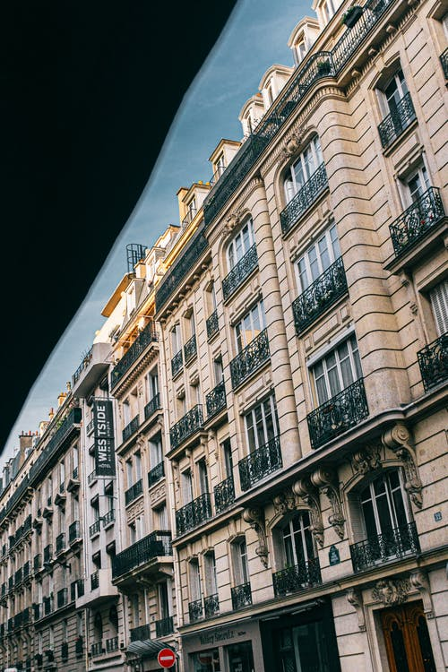
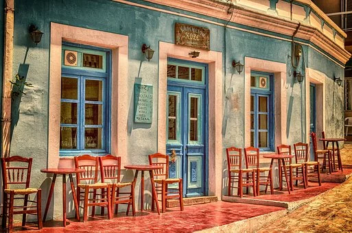

I purchased economy seats on the Kreme D'Airline's World-Plane Number 567. Little did I know that all seats in
World-Plane Number 567 are luxury seats. Apparently, the airline deliberately created a plane (in fact, World-Plane Number
567 is the only the air-plane in Kreme D'Airlines that is a luxury plane) for the sole-purpose of flying important
ceo's and high level executives. However, Kreme D'Airlines is a public plane. They made it public for environmental reasons
since solo-private planes are not good for the environment as they release more carbon-dioxide but take significantly less
passengers. High ranking ceos and exceutives typically do not want to preuse public planes, therefore, Kreme D'Airlines
gets regular customers. They still decided to keep the World-Plane Number 567 a luxury-interior plane. So commoners such as
myself can get cheaper priced airplane tickets (or as cheap as flying to Great Britain can be) with all the amentities of a
private luxury plane. I purchased round-trip regular tickets (with no discounts) for $300 to and from. In total, I paid $600.
To say the least, I strongly recommend you use this airline to travel internationally or inside your
country. The airline's service was absolutely outstanding. The flight-attendants were professional, friendly, and appeared
every 20 minutes to refill the drink of your choice and give delicious assortments of luxury snacks. One of the best things
about luxury planes is that they don't make pit-stops anywhere else. Therefore, World-Plane Number 567 has no
stops and so flights are shorter. I landed in London City Airport after 7 hours and 20 minutes.
I purchased economy seats on the Kreme D'Airline's World-Plane Number 567. Little did I know that all seats in
World-Plane Number 567 are luxury seats. Apparently, the airline deliberately created a plane (in fact, World-Plane Number
567 is the only the air-plane in Kreme D'Airlines that is a luxury plane) for the sole-purpose of flying important
ceo's and high level executives. However, Kreme D'Airlines is a public plane. They made it public for environmental reasons
since solo-private planes are not good for the environment as they release more carbon-dioxide but take significantly less
passengers. High ranking ceos and exceutives typically do not want to preuse public planes, therefore, Kreme D'Airlines
gets regular customers. They still decided to keep the World-Plane Number 567 a luxury-interior plane. So commoners such as
myself can get cheaper priced airplane tickets (or as cheap as flying to Great Britain can be) with all the amentities of a
private luxury plane. I purchased round-trip regular tickets (with no discounts) for $300 to and from. In total, I paid $600.
To say the least, I strongly recommend you use this airline to travel internationally or inside your
country. The airline's service was absolutely outstanding. The flight-attendants were professional, friendly, and appeared
every 20 minutes to refill the drink of your choice and give delicious assortments of luxury snacks. One of the best things
about luxury planes is that they don't make pit-stops anywhere else. Therefore, World-Plane Number 567 has no
stops and so flights are shorter. I landed in London City Airport after 7 hours and 20 minutes.
I paid $30 for a taxi to take me to my hotel. The hotel is called "The Luxe Hotel", as you
can observe the image of the exterior of the short-rise building on the right. I strongly recommend this hotel. Without
any discount, I paid $90 a night (which is extremely cheap for a hotel in London). There is no need to reserve a suite,
especially if you are a solo traveler, or even traveling with someone else, because the hotel rooms are extremely large. The
hotel rooms are 2000 square feet, with an amazing view of the streets of London. Also, the hotel serves a free breakfast,
lunch, dinner, and snack buffet every single day (including weekends). They also have a hot-tub and large luxurious
indoor pool that are open to customers of the hotel only from 8:30 am - 10:45 pm. In addition, the hotel provides 25%
discount tickets for the London Underground trains.
Ole restaurant is a hidden gem in London-town! It's a restaurant that serves only
green-colored food or fish. The food was absolutely delicious! I ordered their specialty green salad, green soup, and green
ice-cream for only $20!!!!! The portions were extremely large and filled me up completely for the next six hours!!!! The wait
times to get a table are typically between 15-20 minutes and the average cost a user spends ranges from $10 to $50. Usually,
if one orders many entrees and dishes or is with many people, they can expect to pay around $45 with tax to bring to a total of
near $50 but not more than $50. It should be noted that you may reserve a table with a maximum of 10 people (yourself included).